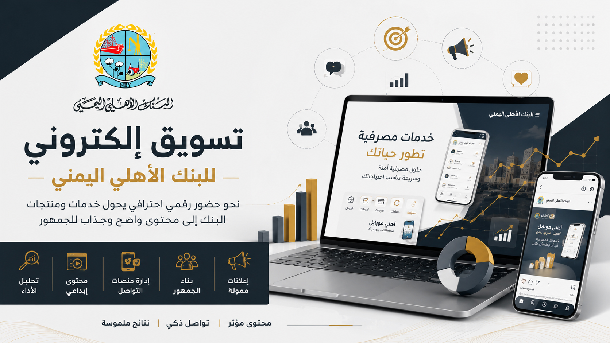

01 — Digital Marketing
البنك الأهلي اليمني
إدارة وتطوير الحضور الرقمي
إدارة وتطوير الحضور الرقمي للبنك الأهلي اليمني عبر تنفيذ استراتيجية لمنصات التواصل الاجتماعي تهدف إلى تعزيز الوعي بالعلامة التجارية وتنظيم المحتوى والحملات الرقمية وتحسين جودة الإنتاج والتفاعل مع الجمهور.
دوري في المشروع
- تنفيذ استراتيجية وسائل التواصل الاجتماعي بما يحقق أهداف زيادة الوعي بالعلامة التجارية.
- إدارة قنوات Facebook وInstagram وYouTube وLinkedIn وTwitter/X.
- إعداد خطط المحتوى وجدولة النشر بما يتوافق مع الأهداف التسويقية.
- إنشاء وصياغة المحتوى الرقمي النصي والمرئي والفيديو.
- تنفيذ الحملات الإعلانية الرقمية والمسابقات التسويقية.
- التنسيق بين فرق التصميم والمحتوى والمصادر الخارجية.
- إدارة فريق العمل وتوزيع المهام والمسؤوليات.
- تحليل أداء المنصات وإعداد التقارير الدورية للإدارة العليا.
- بناء علاقات مهنية مع المؤثرين وصناع المحتوى.
- توظيف أدوات الذكاء الاصطناعي في تحسين وتسريع إنتاج المحتوى.